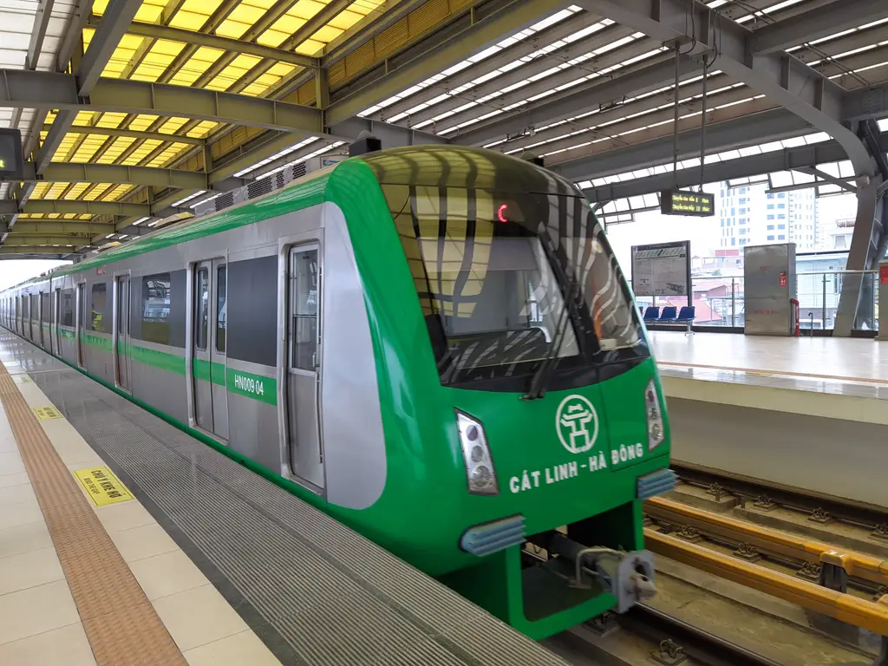
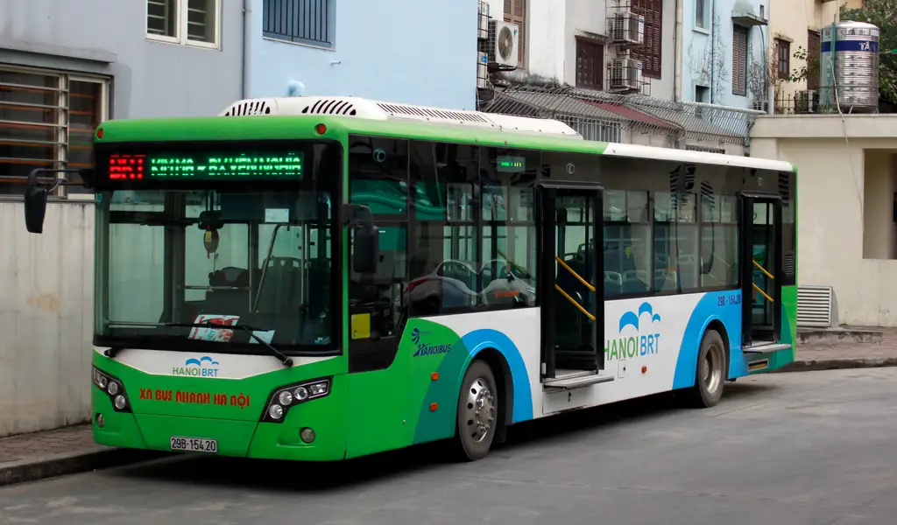
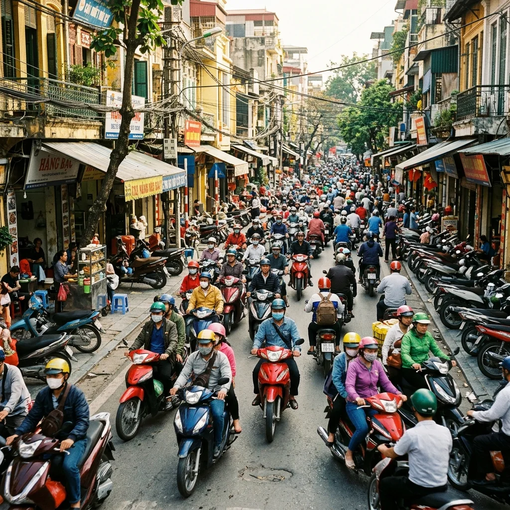

Mobility and policy research
Hanoi
Motorbike
Phase-Out Policy Acceptance
What Hanoi residents need to support a cleaner, fairer transition.
Focus Disentangle choice evidence from Hanoi residents to guide a support-first transition.
Support-First Mandate
Invest in alternatives before restrictions.
Alternatives Matter
Quality, coverage and price drive acceptance.
Equity at the Core
Fair costs protect vulnerable groups.
Trust Builds Buy-In
Transparent revenue use strengthens support.


Key
Takeaways
Evidence
What the data shows
Willingness to Pay by Policy Attribute
VND per month
Positive values increase support. Negative values reduce support.Which Comes First?
Impact on probability of support
at high intensity -22pp
at high intensity
Why acceptance changes
Four levers that shape support
Alternatives First
Better transit, coverage and reliability unlock support.
Affordability
Low fares and predictable costs matter most.
Fairness
Protect low-income riders and small businesses.
Trust & Transparency
Clear funding use builds confidence.
Methodology
Policy rollout pathway
A support-first transition to a cleaner Hanoi
Build Alternatives
Expand and improve transit network.
Afford & Connect
Keep fares low, integrate services.
Communicate & Support
Transparent messaging and rider support.
Restrict & Scale
Phase restrictions with strong options.

Better mobility.
Stronger cities.
The bottom line
Acceptance is not about saying "no" to motorbikes. It is about saying "yes" to better choices first.
- This page summarizes a stated-preference DCE. It is directional evidence, not a traffic or compliance forecast.
- Model values are summarized from local manuscript tables and mirrored portfolio figures for the Hanoi motorbike phase-out study.
- The older alias research-hanoi-phaseout.html redirects here.